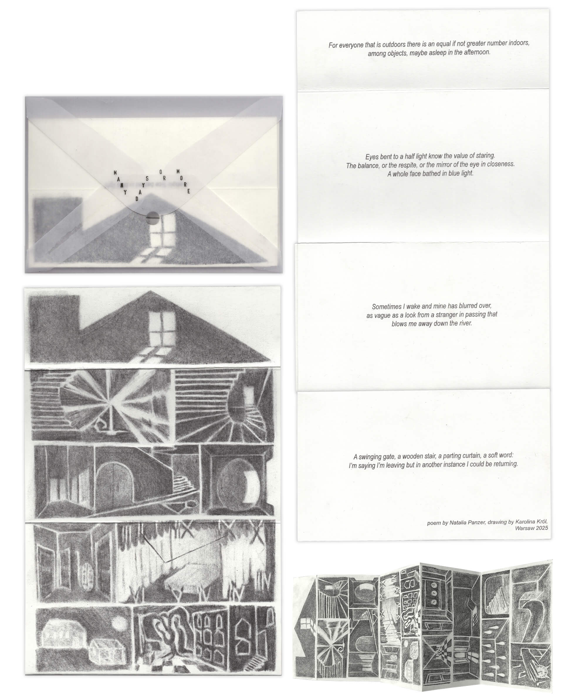

artbook; double-sided fold-out accordion, risoprinted; edition of 60 copies; 2025
Thistle
artbook; double-sided fold-out accordion, risoprinted; edition of 60 copies; 2025

Many days or more
artbook, featuring a poem by Natalia Panzer; double-sided fold-out accordion, risoprinted; edition of 60 copies; 2025
Many days or more
artbook, featuring a poem by Natalia Panzer; double-sided fold-out accordion, risoprinted; edition of 60 copies; 2025
Prophecy zine;
sketch for a cover; 2024
Prophecy zine spreads; Prophecy is a story of a tarot reading in which mysterious creatures face an inevitable fate; 9,9x13,7cm; edition of 200 copies; 16 pages; softcover; risoprinted at Oficyna Peryferie; 2024
Prophecy zine spreads; Prophecy is a story of a tarot reading in which mysterious creatures face an inevitable fate; 9,9x13,7cm; edition of 200 copies; 16 pages; softcover; risoprinted at Oficyna Peryferie; 2024
Red zine;
risoprinted at Academy of Fine Arts; 12x15cm; edition of 25 copies; 16 pages; 2020
Red zine;
risoprinted at Academy of Fine Arts; 12x15cm; edition of 25 copies; 16 pages; 2020
Yellow zine; risoprinted at Academy of Fine arts; 11x16cm; edition of 25 copies; 16 pages; 2021
Yellow zine;
risoprinted at Academy of Fine arts; 11x16cm; edition of 25 copies; 16 pages; 2021
Candle light zine;
charcoal on paper; 10x15cm; one copy; 16 pages; 2023
Candle light zine;
charcoal on paper; 10x15cm; one copy; 16 pages; 2023